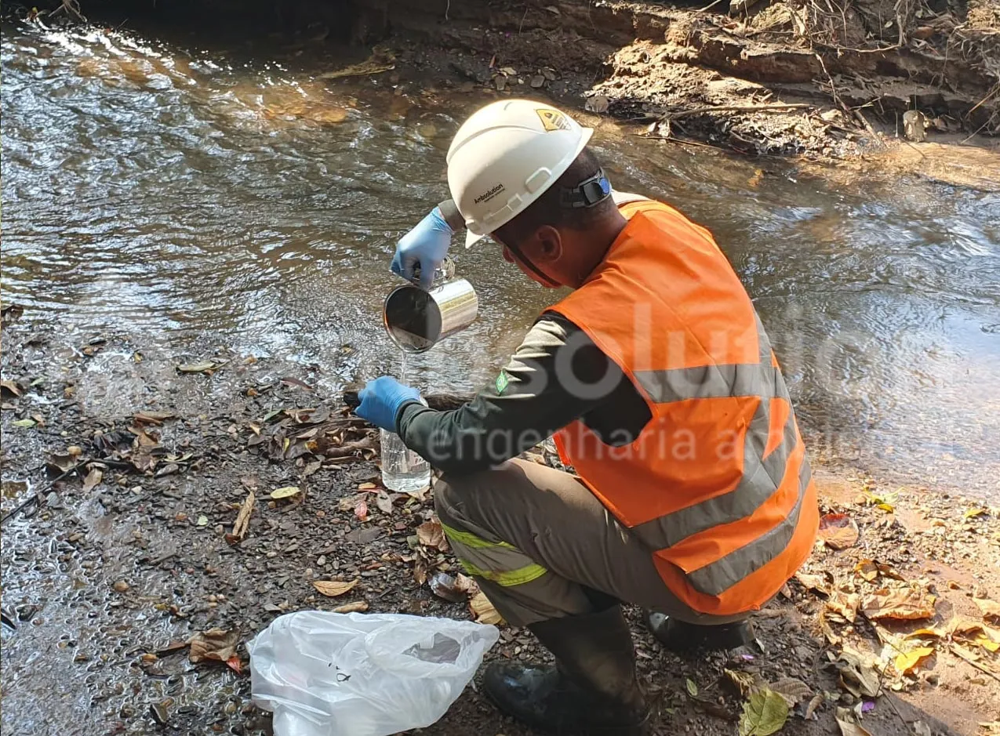

Projetos
Amostragem de Água
A Ambsolution realiza a coleta de amostras de água subterrânea em vários projetos, sobretudo aqueles relacionados à gestão de áreas contaminadas. Essas amostras são coletadas de poços de monitoramento e depois enviadas para laboratórios credenciados para análise química.
Para assegurar a representatividade das amostras, o procedimento de coleta é realizado após 10 dias da instalação dos poços ou após sua purgação, preservando-as de água parada no interior dos poços.